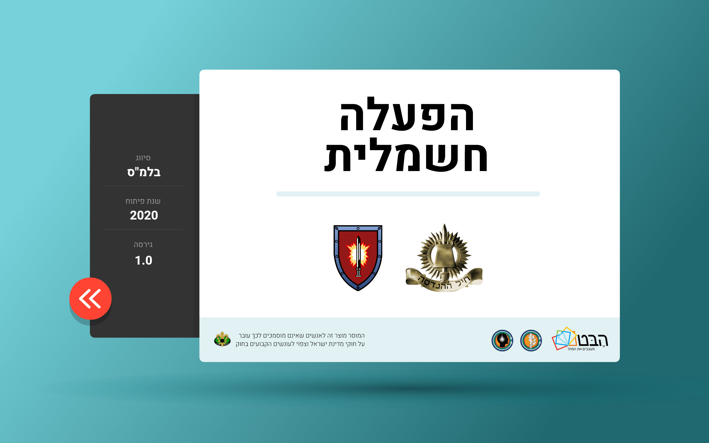
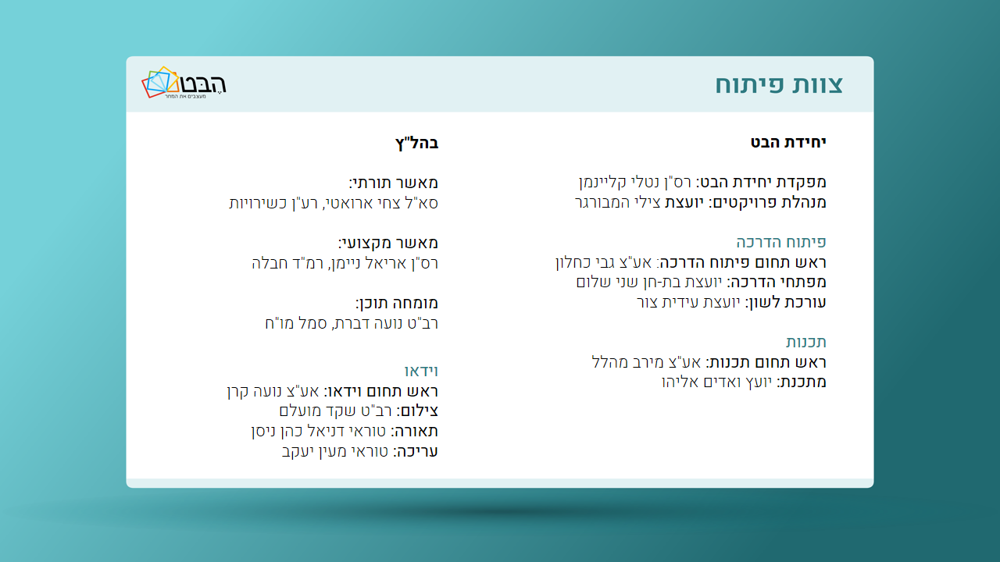

מה ההבדל בין הפעלה קרבית להפעלה חשמלית?
הפעלה קרבית מופעלת בטווח קרוב למטען והפעלה חשמלית מופעלת בטווח רחוק מהמטען
בהפעלה קרבית משתמשים בלבנות חבלה והפעלה חשמלית משתמשים בנפץ חשמלי בלבד
המשך
בעת הרמת מנוף PRIME, המיני שרייק יבצע בדיקת תקינות באופן עצמאי. כיצד נבצע את הבדיקה
נלחץ על כפתור TEST ונמתין לקבלת הבהוב ירוק
נלחץ על כפתור TEST ונמתין לקבלת הבהוב ירוק ולאחר מכן נלחץ על כפתור READY ונמתין לקבלת הבהוב אדום
המשך
בחר את סדר הפעולות הנכון להפעלת מיני שרייק
לחיצה על כפתור TEST ולחיצה על כפתור FIRE בו"ז >> הרמת מנוף >> בדיקת מעגל חשמלי TEST
בדיקת מעגל חשמלי TEST >> לחיצה על כפתור TEST ולחיצה על כפתור FIRE בו"ז >> הרמת מנוף
הרמת מנוף >> בדיקת מעגל חשמלי TEST >> לחיצה על כפתור TEST ולחיצה על כפתור FIRE בו"ז
לחיצה על כפתור TEST ולחיצה על כפתור FIRE בו"ז >> בדיקת מעגל חשמלי TEST >> הרמת מנוף
המשך
גרור את הפריטים למקום המתאים בטבלה
תיאור התקלה
גורם ל...
שם התקלה
סוג התיל
קרע פנימי בסיבי הנחושת שמרכיבים את התיל
מונע סגירת מעגל חשמלי
נתק
חד גידי
מגע פנימי בין חוטי הנחושת שבשני התילים
סוגר את המעגל החשמלי במקום לא רצוי
קצר
דו גידי וחד גידי
לבדיקה
לצפייה בתשובה הנכונה
המשך
חד גידי
קצר
סוגר את המעגל החשמלי במקום לא רצוי
מונע סגירת מעגל חשמלי
נתק
דו גידי וחד גידי
גרור את הפריטים למקום המתאים בטבלה
שם התקלה
האם לקצר?
מעגל חשמלי
אם תקין, נראה אור ירוק?
נתק
כן
סגור
כן
קצר
לא
פתוח
לא
לבדיקה
לצפייה בתשובה הנכונה
המשך
כן
פתוח
סגור
לא
לא
כן
כיצד נימנע מהשראה חשמלית?
נרחיק מכשירים חשמליים למרחק של 30 מ' לפחות מהמערכת החשמלית
נשמור על קצוות התילים מכוסים במעטפת הפלסטיק, עד לחיבורם
נקפיד על קיצור התילים בכל שלב
נחבר את הנפץ החשמלי לתילים, טרם חיבורם למערכת החבלה
המשך
לבדיקה
באיזה מעגל חשמלי "כל אחד הוא לעצמו"?
מעגל בטור
מעגל במקביל
המשך
כמה זמן יש להמתין עד שניתן יהיה להתקרב למטען שלא התפוצץ?
15 דקות
5 דקות
המשך
בהפעלה חשמלית נעלה בקשר, לאחר שנקבל א' לפסל נתחיל לספור לאחור עד 6 ואז נעצור ונוריד אצבע מהקשר. מדוע?
שנאפשר לכוחותינו להתרחק במקרה והם עדיין לא במרחב הביטחון
שנוכל לשמוע את פקודת "חדל" במקרה הצורך
המשך
